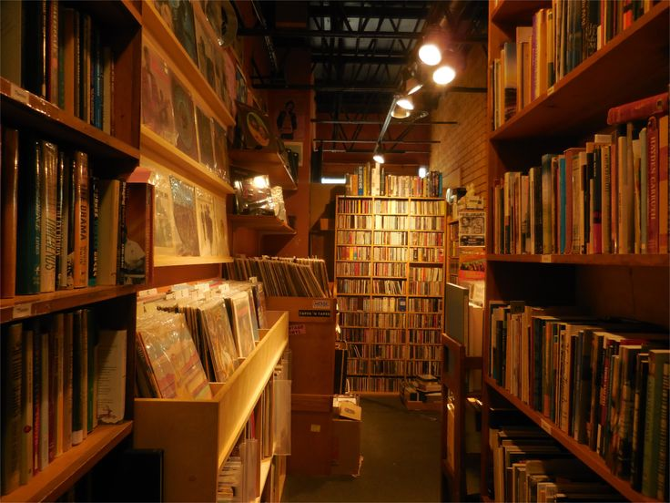
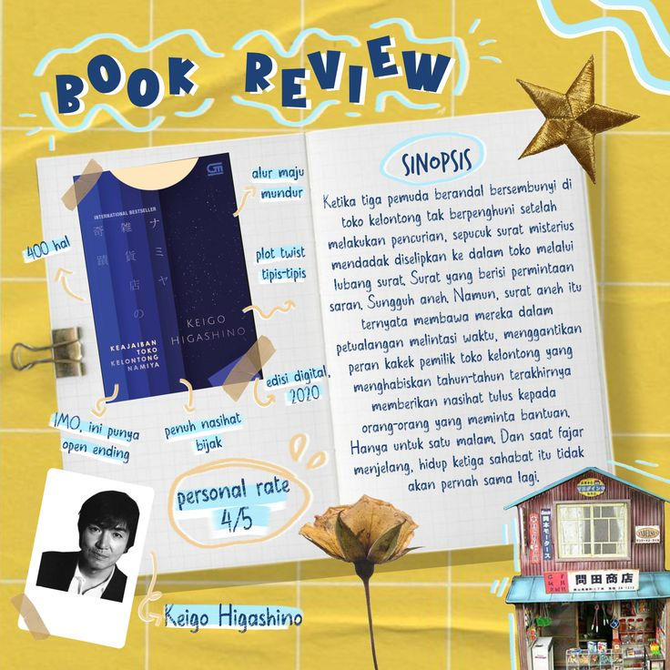
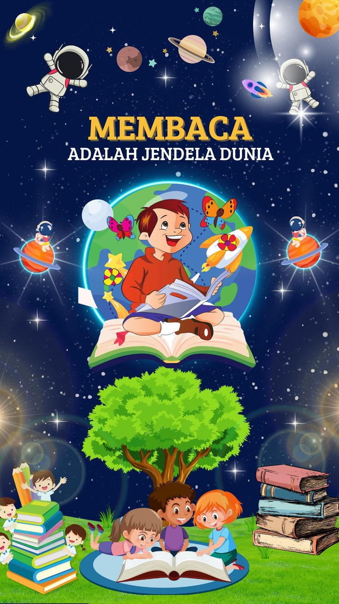
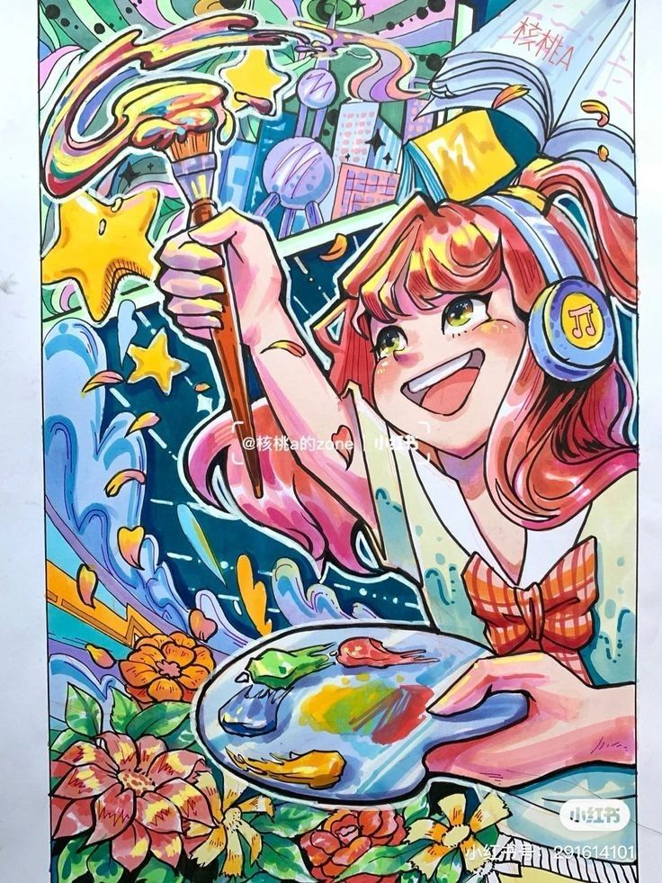

Repositori tugas Pengembangan Web: eksplorasi, praktik, dan hasil belajar saya.

Temukan berbagai tugas yang telah saya kerjakan.
Artikel dan tutorial untuk belajar web.
Kami bekerja sama dengan Perpustakaan Universitas Sumatera Utara untuk memberikan akses lebih luas ke koleksi buku dan sumber daya.
Gunakan fitur pencarian untuk menemukan buku pilihan Anda.
"Learn to light a candle in the darkest moments of someone's life. Be the light that helps others see; it is what gives life its deepest significance." — Roy T. Bennett
"You often feel tired, not because you've done too much, but because you've done too little of what sparks a light in you." — Alexander Den Heijer
"Perpustakaan adalah jantung dari institusi pendidikan dan fondasi dari masyarakat pembelajar." — Sulistyo-Basuki
"If there's one thing you learn by working on a lot of different Web sites, it's that almost any design idea can be made usable in the right circumstances." — Steve Krug
"You do not rise to the level of your goals. You fall to the level of your systems." — James Clear

Tunjukkan kreativitasmu dalam lomba ini!

Kenali aksara lokal lewat kelas menulis ini.

Wujudkan kreativitasmu lewat ilustrasi digital!
Kami berharap Anda menemukan informasi yang berguna. Selamat menjelajahi!